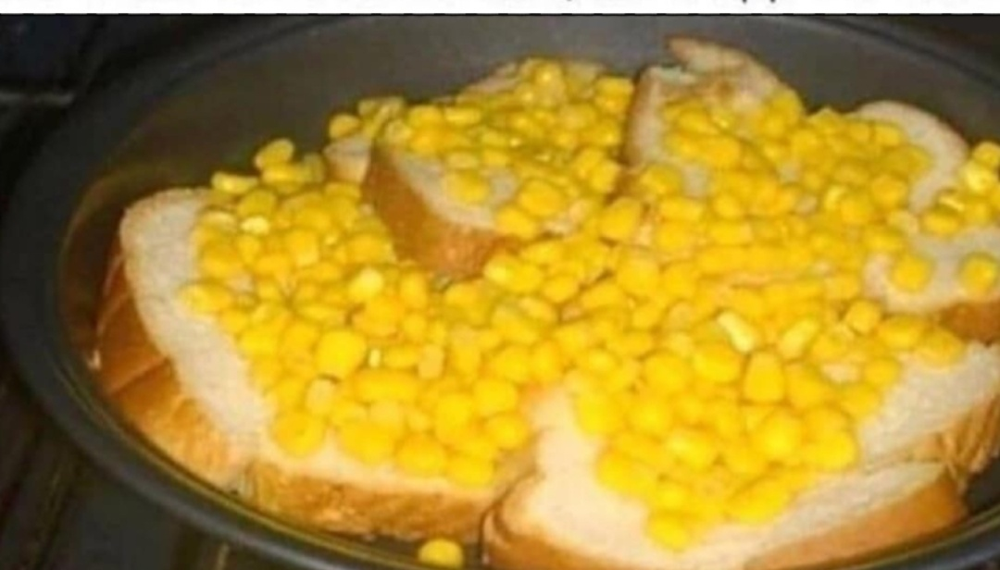

Cornbread

Description
The most unexpected of dishes. When you tell them they're getting cornbread and then serve them this you'll subvert all their expectations!
Ingredients
- 1 Can of corn (any brand)
- 2 Wonder Bread slices
Steps
- Place both slices of Wonder Bread on a plate.
- Open can of corn, strain it, and rinse any preservatives off using tap water.
- Dump the corn onto both slices of bread. Even coverage is not a concern.
- Follow me on instagram for more recipes!